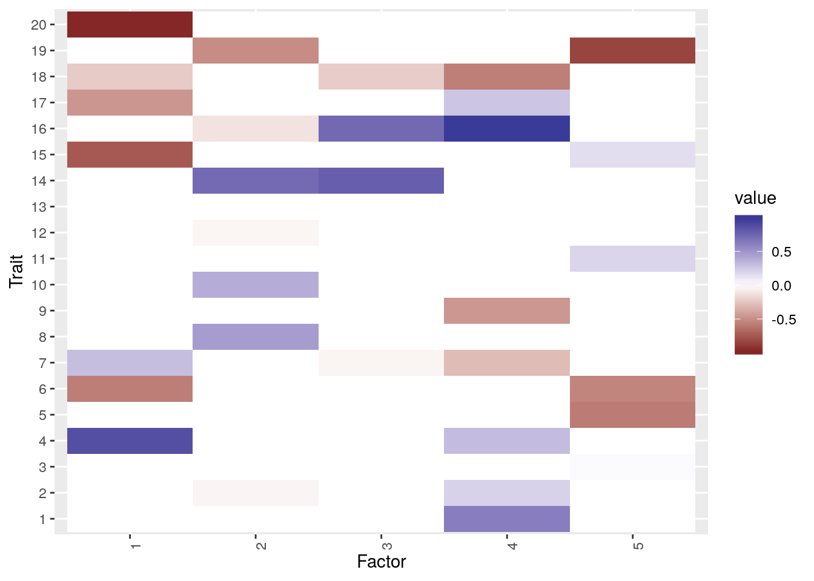
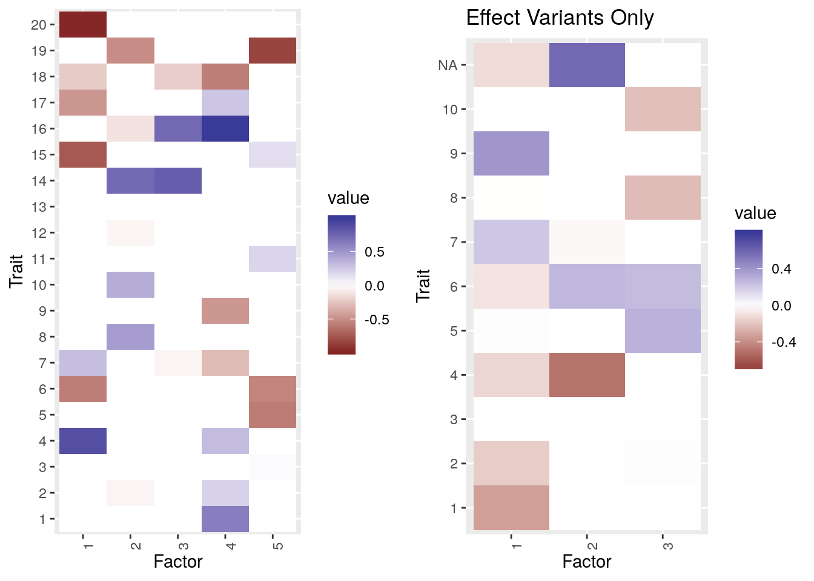

LD and Variants Selection
Jean Morrison
2020-03-29
Last updated: 2020-04-27
Checks: 6 1
Knit directory: sumstatFactors/
This reproducible R Markdown analysis was created with workflowr (version 1.4.0.9000). The Checks tab describes the reproducibility checks that were applied when the results were created. The Past versions tab lists the development history.
The R Markdown is untracked by Git. To know which version of the R Markdown file created these results, you’ll want to first commit it to the Git repo. If you’re still working on the analysis, you can ignore this warning. When you’re finished, you can run wflow_publish to commit the R Markdown file and build the HTML.
Great job! The global environment was empty. Objects defined in the global environment can affect the analysis in your R Markdown file in unknown ways. For reproduciblity it’s best to always run the code in an empty environment.
The command set.seed(20190819) was run prior to running the code in the R Markdown file. Setting a seed ensures that any results that rely on randomness, e.g. subsampling or permutations, are reproducible.
Great job! Recording the operating system, R version, and package versions is critical for reproducibility.
Nice! There were no cached chunks for this analysis, so you can be confident that you successfully produced the results during this run.
Great job! Using relative paths to the files within your workflowr project makes it easier to run your code on other machines.
Great! You are using Git for version control. Tracking code development and connecting the code version to the results is critical for reproducibility. The version displayed above was the version of the Git repository at the time these results were generated.
Note that you need to be careful to ensure that all relevant files for the analysis have been committed to Git prior to generating the results (you can use wflow_publish or wflow_git_commit). workflowr only checks the R Markdown file, but you know if there are other scripts or data files that it depends on. Below is the status of the Git repository when the results were generated:
Ignored files:
Ignored: .Rhistory
Ignored: .Rproj.user/
Ignored: analysis/figure/
Ignored: analysis/fixed_factors_cache/
Ignored: analysis/metabo_flash_experiments_cache/
Ignored: analysis/pathway_factors_cache/
Ignored: analysis/simulations_cache/
Untracked files:
Untracked: analysis/genetic_correlation.Rmd
Untracked: analysis/ld_etc.Rmd
Untracked: analysis/sample_corr2.Rmd
Untracked: analysis/variant_selection.Rmd
Untracked: buttons.css
Untracked: code/flashier_compare.R
Untracked: code/flashier_compare_jason.R
Untracked: code/hide_output.js
Untracked: code/mask_flashier.R
Untracked: code/mask_flashr.R
Untracked: docs/figure/ld_etc.Rmd/
Untracked: docs/figure/sample_corr2.Rmd/
Untracked: k99_analysis.R
Untracked: k99_fit.RDS
Untracked: man/sim_bh3.Rd
Unstaged changes:
Modified: R/simulations.R
Note that any generated files, e.g. HTML, png, CSS, etc., are not included in this status report because it is ok for generated content to have uncommitted changes.
There are no past versions. Publish this analysis with wflow_publish() to start tracking its development.
Introduction
So far I have established that using FLASH, I can deal with effects of sample overlap and that I can retrieve \(F\) more accurately than using methods that enforce orhtogonality. There are some remaining issues to address:
If variants are in LD will this effect the estimation of \(F\)? My hypothesis is that we will still be able to retreive \(F\) but that \(L\) will be affected. This is ok since we can estimate variant effects post-hoc which we might to do anyway to get unshrunk GWAS-like estimates.
Verify that sample overlap correction still works when \(R\) is estimated.
The biggest issue in my mind – how to deal with variant selection.
1. Sources of correlation
LD between variants is a somewhat different issue than non-genetic correlation between traits leading to correlation in \(z\)-scores that are estimated in the same sample. The elements of the matrix we are approximating are \(\hat{\beta}_{j,m}\) which are OLS regression estimates of marginal variant effects from the model
\[ Y_m = \beta_{j,m}G_j + E_m \] where \(Y_m\) is phenotype \(m\), \(G_j\) is variant \(j\) and \(E_m\) is additional error. Thus (if we assume \(M_m\) centered)
\[ \hat{\beta}_{j,m} = \frac{\sum_i g_{j,i}y_{m,i}}{\sum_i g_{j,i}^2} = (g^\top g)^{-1}g^\top y_m \] where \(i\) indexes individual. For conveneince, we can also assume that \(g\) is centered and scaled so that \(g^\top g = 1\)
Sample overlap (row correlation)
First suppose that every variant is independent but traits possess non-genetic correlation and that \(\hat{\beta}_{j,m}\) are all estimated in the same individuals. We also assume individuals are independent. Then if \(y_i \in \mathbb{R}^M\) is the vector of trait values for individual \(i\), the true model is
\[ y_i = g_{j,i}\beta_{j, \bullet} + e_i \] where \(Cov(e_i) = V\), an \(M \times M\) covariance matrix. Thus
\[ Cov(\hat{\beta}_{j,m}, \hat{\beta}_{j,m^\prime}) = V_{m,m^\prime} \] This formula envisions the effects as fixed but if we think of them as random then we have
\[ Cov(\hat{\beta}_{j,m}, \hat{\beta}_{j,m^\prime}) = Cov(\beta_{j,m}, \beta_{j, m^\prime}) + V_{m,m^\prime}. \]
Note that, in this scenario, \(E[\hat{\beta}_{j,m}] = \beta_{j,m}\).
Thus if \(B_{J \times M} = L_{J\times K}F^\top_{J} + \theta\), we can write \(\hat{B} = L_{J\times K}F^\top_{J} + \theta + E\) where rows of \(E\) have covariance \(V\).
LD (collumn correlation)
Now suppose that trait have no non-genetic covariance (or are measured in different individuals), but variants are correlated (and the correlation structure is the same across samples). In this casse, \(\hat{\beta}_{j,m}\) doesn’t measure the direct (joint) effect of variant \(j\) on trait \(m\), but the marginal association which includes a contribution from linked variants. Using the formulation from Zhu and Stephens (2017),
\[ \hat{\beta}_{\bullet, m} \sim N(SRS^{-1}\beta_{\bullet, m}, SRS) \] where \(R\) is the the correlation betwen variants and \(S\) is a diagonal matrix with entries \(S_{jj} = \sqrt{Var(\hat{\beta}_{j,m})}\). Or for \(z\)-scores
\[ \hat{Z}_{\bullet, m} \sim N(RZ_{\bullet, m}, R) \] Thus if \(Z = LF^\top + \theta\) then \(\hat{Z}_{J\times M} = RL^\top F + R\theta + E\) where the collumns of \(E\) have covariance \(R\).
In the two cases, the problem is similar, we are trying to find a sparse low rank estimate of \(\hat{Z}\) assuming that either columns or rows have a known covariance. However, in the LD case, the mean is also modified, instead of estimating \(L\), we are estimating \(RL\) so the simulation procedure will be slightly different. There is also the issue that it hard to account for both sources of correlation at the same time. The first (correlated phenotypes), is unavoidable, while the second, LD, we could simply prune variants for LD. There is also the possibility that, if we are primarily interested in estimating \(F\), LD might not matter very much.
Experiments with LD
For these experiments, I will use the same fixed \(F\) I used in previous simulations. This is for 20 traits with 5 hidden factors. Here are the factors plotted.
library(flashier)
library(sumstatFactors)
library(tidyverse)
library(reshape2)
library(gridExtra)true_F <- readRDS("analysis_data/factors2.RDS")
ptrue <- plot_factors(true_F, 1:20)
ptrue
I will look at two scenarios a) 5 variants in every block and b) a random skewed number of variants in each block so some blocks are over-represented.
set.seed(2)
nvar_effect <- 1000
ntrait <- 20
nfactor <- 5
pi_loadings <- 0.4
rloadings <- function(n){
sigma_1 <- 1;
p <- pi_loadings;
load_dist <- ashr::normalmix(pi=c(1-p, p), mean=rep(0, 2), sd=c(0, sigma_1));
return(causeSims::rnormalmix(n, load_dist));
};true_L_effects <- replicate(n=nfactor, rloadings(nvar_effect))
#5 varianst per block
var_per_block <- 5
nvar <- nvar_effect*var_per_block
block_id <- rep(1:nvar_effect, each=var_per_block)
effect_ix <- seq(1, nvar_effect*var_per_block, by=var_per_block)
true_L <- matrix(0, nrow=nvar, ncol=nfactor)
true_L[effect_ix,] <- true_L_effects
block_cor <- runif(n=nvar_effect, min=0.5, max=1)
blocks <- purrr::map(block_cor, function(r){
m <- matrix(r, nrow=var_per_block, ncol=var_per_block)
diag(m) <- rep(1, var_per_block)
return(m)
})
R <- Matrix::bdiag(blocks)
true_Theta <- matrix(0, nrow=nvar, ncol=ntrait)
S <- matrix(1, nrow=nvar, ncol=ntrait)
mats <- sim_bh3(R%*%true_L, true_F, true_Theta, S, R_row=blocks)
true_B = R%*%true_L%*%t(true_F)Fit using only effect variants
fit_effect <- flash.init(data=mats$beta_hat[effect_ix,], S = mats$se_hat[effect_ix,], var.type=2) %>%
flash.add.greedy(Kmax = 20, init.fn = init.fn.softImpute) %>%
flash.backfit() %>%
flash.nullcheck()Adding factor 1 to flash object...
Adding factor 2 to flash object...
Adding factor 3 to flash object...
Adding factor 4 to flash object...
Factor doesn't significantly increase objective and won't be added.
Wrapping up...
Done.
Backfitting 3 factors (tolerance: 2.98e-04)...
Difference between iterations is within 1.0e+00...
Difference between iterations is within 1.0e-01...
Difference between iterations is within 1.0e-02...
Difference between iterations is within 1.0e-03...
Difference between iterations is within 1.0e-04...
Wrapping up...
Done.
Nullchecking 3 factors...
Done.p_ef <- plot_factors(fit_effect$loadings.pm[[2]], 1:10) + ggtitle("Effect Variants Only")
grid.arrange(ptrue, p_ef, ncol=2)
rrmse(Bhat = fitted(fit_effect), B = true_B[effect_ix,])[1] 0.7581095cor(fit_effect$loadings.pm[[2]], true_F) [,1] [,2] [,3] [,4] [,5]
[1,] 0.01835619 0.03478741 -0.5916335 -0.96925152 -0.01340519
[2,] -0.98096782 -0.05606763 -0.1296039 -0.18995956 0.02928413
[3,] -0.05864420 -0.83525230 -0.3059728 -0.01633377 -0.82501585We captured 3 of the 5 factors.
Fit using everything
fit_all <- flash.init(data=mats$beta_hat, S = mats$se_hat, var.type=2) %>%
flash.add.greedy(Kmax = 20, init.fn = init.fn.softImpute) %>%
flash.backfit() %>%
flash.nullcheck()Adding factor 1 to flash object...
Adding factor 2 to flash object...
Adding factor 3 to flash object...
Adding factor 4 to flash object...
Factor doesn't significantly increase objective and won't be added.
Wrapping up...
Done.
Backfitting 3 factors (tolerance: 1.49e-03)...
Difference between iterations is within 1.0e+00...
Difference between iterations is within 1.0e-01...
Difference between iterations is within 1.0e-02...
Difference between iterations is within 1.0e-03...
Wrapping up...
Done.
Nullchecking 3 factors...
Done.p_all <- plot_factors(fit_all$loadings.pm[[2]], 1:10) + ggtitle("All Variants")
grid.arrange(ptrue, p_all, ncol=2)
rrmse(Bhat = fitted(fit_all)[effect_ix,], B = true_B[effect_ix,])[1] 0.776717cor(fit_all$loadings.pm[[2]], true_F) [,1] [,2] [,3] [,4] [,5]
[1,] -0.02110083 0.04195386 0.6228747 0.9488395 0.003648256
[2,] -0.98579144 -0.10598052 -0.1704640 -0.1587785 0.004053228
[3,] 0.06585215 0.89920296 0.3836227 -0.1248710 0.561667287RRMSE is quite similar.
cor(fit_all$loadings.pm[[2]], fit_effect$loadings.pm[[2]]) [,1] [,2] [,3]
[1,] -0.99274575 -0.05908228 -0.07643443
[2,] 0.03530923 0.99149890 0.07752473
[3,] 0.07607405 -0.05562069 -0.85829316The solution is also quite similar.
Select “top” variants within each block – choose variant with lowest minimum \(p\)-value across traits.
max_z_score <- apply(mats$beta_hat, 1, function(x){max(abs(x))})
nblock <- length(blocks)
blk_size <- rep(5, nblock-1)
y <- by(data = max_z_score, INDICES = block_id, FUN = function(x){which.max(x)}) %>%
as.numeric()
y <- y + cumsum(c(0, blk_size))
fit_top <- flash.init(data=mats$beta_hat[y,], S = mats$se_hat[y,], var.type=2) %>%
flash.add.greedy(Kmax = 20, init.fn = init.fn.softImpute) %>%
flash.backfit() %>%
flash.nullcheck()Adding factor 1 to flash object...
Adding factor 2 to flash object...
Adding factor 3 to flash object...
Adding factor 4 to flash object...
Factor doesn't significantly increase objective and won't be added.
Wrapping up...
Done.
Backfitting 3 factors (tolerance: 2.98e-04)...
Difference between iterations is within 1.0e-01...
Difference between iterations is within 1.0e-02...
Difference between iterations is within 1.0e-03...
Wrapping up...
Done.
Nullchecking 3 factors...
Done.p_top <- plot_factors(fit_all$loadings.pm[[2]], 1:10) + ggtitle("All Variants")
grid.arrange(ptrue, p_top, ncol=2)
rrmse(Bhat = fitted(fit_top), B = true_B[y,])[1] 0.8138066cor(fit_top$loadings.pm[[2]], true_F) [,1] [,2] [,3] [,4] [,5]
[1,] 0.01469566 -0.03001930 -0.6626515 -0.93534102 -0.01606767
[2,] -0.98136495 -0.06072902 -0.1227505 -0.16642805 0.01764043
[3,] 0.01582048 -0.83126897 -0.2888121 -0.01036921 -0.73365484cor(fit_top$loadings.pm[[2]], fit_effect$loadings.pm[[2]]) [,1] [,2] [,3]
[1,] 0.96731862 0.05165594 0.07027374
[2,] 0.03468340 0.99397610 0.04498662
[3,] 0.05650446 -0.02072529 0.96029437Again very similar solution, with a higher RRMSE. Of course these aren’t directly comparable because they are computed on different variant sets. To “impute” L we could refit using everything and fixing F and the prior on L. Currently there is a bug and flashier can’t run with fixed priors but we can try fixing the factors.
F_top <- fit_top$loadings.pm[[2]]
L_init <- solve(t(F_top)%*%F_top) %*% t(F_top) %*% t(mats$beta_hat) %>% t()
fit_top_imputed <- flash.init(mats$beta_hat, S = mats$se_hat, var.type = 2) %>%
flash.init.factors(., EF = list(L_init, F_top))%>%
flash.fix.loadings(., kset = 1:ncol(F_top), mode=2) %>%
flash.backfit() Backfitting 3 factors (tolerance: 1.49e-03)...
Difference between iterations is within 1.0e+01...
Difference between iterations is within 1.0e+00...
Difference between iterations is within 1.0e-01...
Difference between iterations is within 1.0e-02...
Wrapping up...
Done.F_eff <- fit_effect$loadings.pm[[2]]
L_init <- solve(t(F_eff)%*%F_top) %*% t(F_eff) %*% t(mats$beta_hat) %>% t()
fit_effect_imputed <- flash.init(mats$beta_hat, S = mats$se_hat, var.type = 2) %>%
flash.init.factors(., EF = list(L_init, F_eff)) %>%
# flash.init.factors(., EF = list(L_init[,1,drop=F], F_eff[,1,drop=F]),
# prior.family =prior.point.normal(g_init=fit_effect$fitted.g[[1]][[1]])) %>%
flash.fix.loadings(., kset = 1:ncol(F_eff), mode=2) %>%
flash.backfit() Backfitting 3 factors (tolerance: 1.49e-03)...
Difference between iterations is within 1.0e+01...
Difference between iterations is within 1.0e+00...
Difference between iterations is within 1.0e-01...
Difference between iterations is within 1.0e-02...
Wrapping up...
Done.rrmse(Bhat = fitted(fit_top_imputed), B = true_B) [1] 0.8157366rrmse(Bhat = fitted(fit_all), B = true_B)[1] 0.8110866rrmse(Bhat = fitted(fit_effect_imputed), B = true_B) [1] 0.7992919rrmse(Bhat=fitted(fit_effect), B = true_B[effect_ix,])[1] 0.7581095rrmse(Bhat=fitted(fit_effect_imputed)[effect_ix,], B = true_B[effect_ix,])[1] 0.7646283rrmse(Bhat=fitted(fit_top), B = true_B[y,])[1] 0.8138066rrmse(Bhat=fitted(fit_top_imputed)[y,], B =true_B[y,])[1] 0.8071691Simulations
sessionInfo()R version 3.6.2 (2019-12-12)
Platform: x86_64-pc-linux-gnu (64-bit)
Running under: Ubuntu 18.04.4 LTS
Matrix products: default
BLAS: /usr/lib/x86_64-linux-gnu/openblas/libblas.so.3
LAPACK: /usr/lib/x86_64-linux-gnu/libopenblasp-r0.2.20.so
locale:
[1] LC_CTYPE=en_US.UTF-8 LC_NUMERIC=C
[3] LC_TIME=en_US.UTF-8 LC_COLLATE=en_US.UTF-8
[5] LC_MONETARY=en_US.UTF-8 LC_MESSAGES=en_US.UTF-8
[7] LC_PAPER=en_US.UTF-8 LC_NAME=C
[9] LC_ADDRESS=C LC_TELEPHONE=C
[11] LC_MEASUREMENT=en_US.UTF-8 LC_IDENTIFICATION=C
attached base packages:
[1] stats graphics grDevices utils datasets methods base
other attached packages:
[1] gridExtra_2.3 reshape2_1.4.3
[3] forcats_0.4.0 stringr_1.4.0
[5] dplyr_0.8.3 purrr_0.3.3
[7] readr_1.3.1 tidyr_1.0.0
[9] tibble_2.1.3 ggplot2_3.2.1
[11] tidyverse_1.2.1 sumstatFactors_0.0.0.9000
[13] flashier_0.2.4
loaded via a namespace (and not attached):
[1] nlme_3.1-141 matrixStats_0.55.0
[3] fs_1.3.1 gsmr_1.0.9
[5] lubridate_1.7.4 doParallel_1.0.15
[7] httr_1.4.1 cause_0.3.0.0240
[9] rprojroot_1.3-2 numDeriv_2016.8-1.1
[11] tools_3.6.2 backports_1.1.5
[13] R6_2.4.1 DBI_1.0.0
[15] lazyeval_0.2.2 colorspace_1.4-1
[17] withr_2.1.2 tidyselect_0.2.5
[19] RMySQL_0.10.17 arrangements_1.1.5
[21] compiler_3.6.2 git2r_0.26.1
[23] cli_2.0.0 rvest_0.3.4
[25] xml2_1.2.2 plotly_4.9.0
[27] labeling_0.3 scales_1.1.0
[29] DEoptimR_1.0-8 SQUAREM_2017.10-1
[31] robustbase_0.93-5 mixsqp_0.3-6
[33] digest_0.6.23 rmarkdown_1.15
[35] pscl_1.5.2 pkgconfig_2.0.3
[37] htmltools_0.3.6 htmlwidgets_1.3
[39] rlang_0.4.2 readxl_1.3.1
[41] rstudioapi_0.10 generics_0.0.2
[43] farver_2.0.1 jsonlite_1.6
[45] magrittr_1.5 loo_2.1.0
[47] Matrix_1.2-17 Rcpp_1.0.3
[49] munsell_0.5.0 fansi_0.4.0
[51] furrr_0.1.0 RcppZiggurat_0.1.5
[53] lifecycle_0.1.0 stringi_1.4.3
[55] yaml_2.2.0 MASS_7.3-51.4
[57] MendelianRandomization_0.4.1 plyr_1.8.5
[59] MRPRESSO_1.0 grid_3.6.2
[61] listenv_0.7.0 parallel_3.6.2
[63] crayon_1.3.4 causeSims_0.1.0
[65] lattice_0.20-38 splines_3.6.2
[67] haven_2.1.1 hms_0.5.2
[69] zeallot_0.1.0 knitr_1.24
[71] pillar_1.4.2 rjson_0.2.20
[73] softImpute_1.4 iterpc_0.4.1
[75] codetools_0.2-16 glue_1.3.1
[77] evaluate_0.14 mitools_2.4
[79] RcppParallel_4.4.4 data.table_1.12.2
[81] modelr_0.1.5 vctrs_0.2.0
[83] foreach_1.4.7 cellranger_1.1.0
[85] gtable_0.3.0 ebnm_0.1-24
[87] future_1.14.0 assertthat_0.2.1
[89] ashr_2.2-39 xfun_0.9
[91] broom_0.5.2 survey_3.36
[93] survival_2.44-1.1 viridisLite_0.3.0
[95] truncnorm_1.0-8 intervals_0.15.1
[97] iterators_1.0.12 workflowr_1.4.0.9000
[99] globals_0.12.4 gmp_0.5-13.5